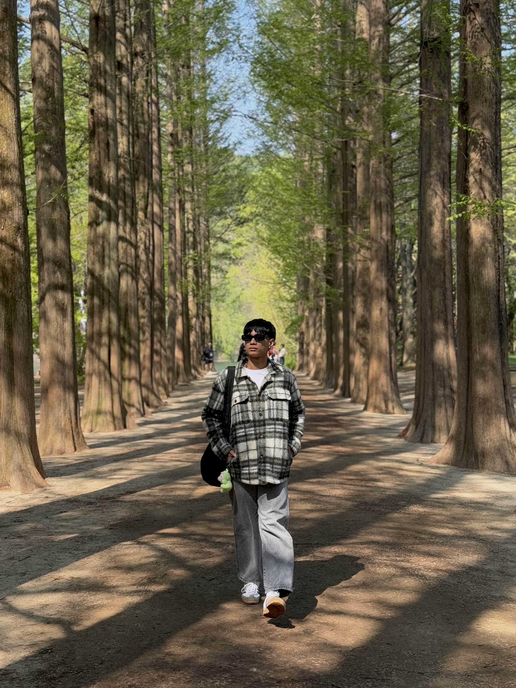
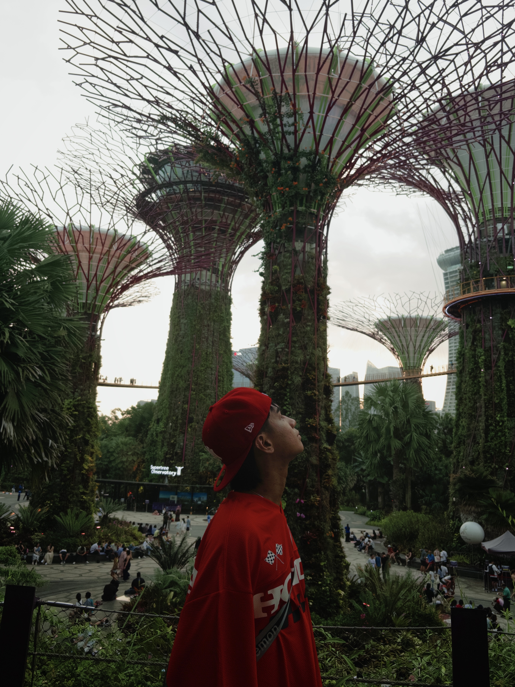
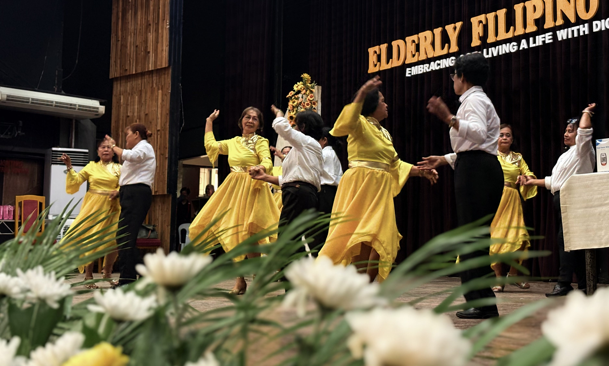

DX-001
Chronic Wanderlust
Persistent desire to discover destinations, cultures, food, and new experiences.
CONDITION: ACTIVE"A strong desire to explore, create, document, and experience the world."
Patient demonstrates a strong interest in travelling, photography, visual arts, graphic design, and dance. These interests have become important parts of the patient's identity and everyday life.
Personal soundtrack associated with the patient.
Persistent desire to discover destinations, cultures, food, and new experiences.
CONDITION: ACTIVEFrequent tendency to capture moments, places, people, and stories through photography.
CONDITION: ACTIVEContinuous engagement in illustration, design, and visual creativity.
CONDITION: ACTIVEStrong inclination toward movement, choreography, music, and dance.
CONDITION: ACTIVEPatient presents with a multidimensional personality characterized by curiosity, creativity, artistic expression, and enthusiasm for exploration.
Patient has an extensive travel history including multiple destinations throughout the Philippines and several international destinations.

Beach • Exploration • Memories

Nature • Culture • Adventure
Heritage • Food • Exploration
Add more destinations as your travel history grows.

Culture • Food • City Life

Architecture • Food • Exploration
Culture • Food • Adventure
Patient demonstrates multiple creative competencies involving photography, illustration, visual design, and dance.


Patient demonstrates strong creative functioning across visual arts, photography, graphic design, and performing arts.
4th Year Nursing Student
Aspiring Surgeon
"Lagi't lagi para sa Bayan."
As a nursing student, I have developed a strong interest in surgical nursing. The long-term aspiration is to pursue medicine and become a surgeon.
Where preparation, precision, teamwork, and patient care meet.
Soundtrack for the future surgeon.